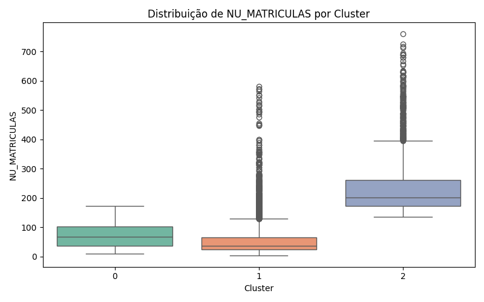
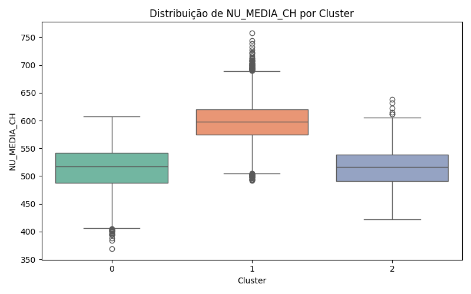
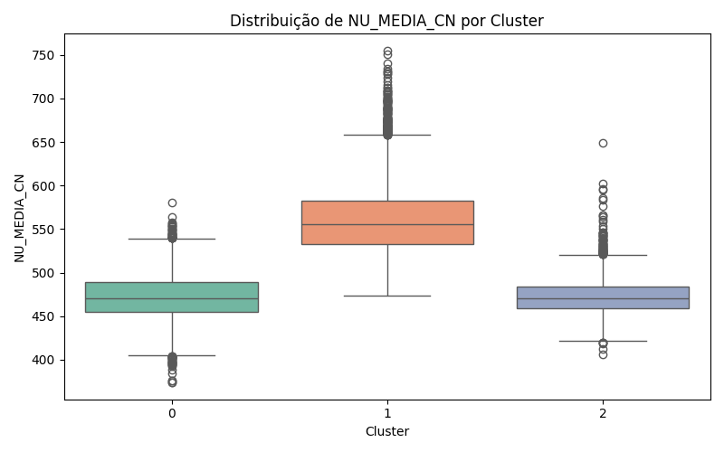
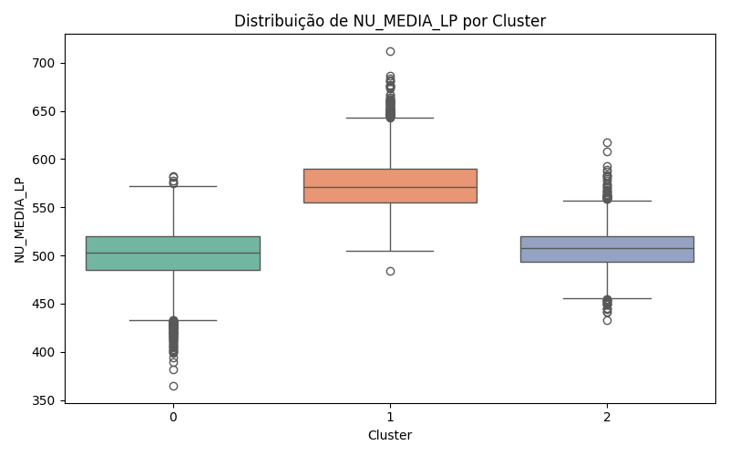
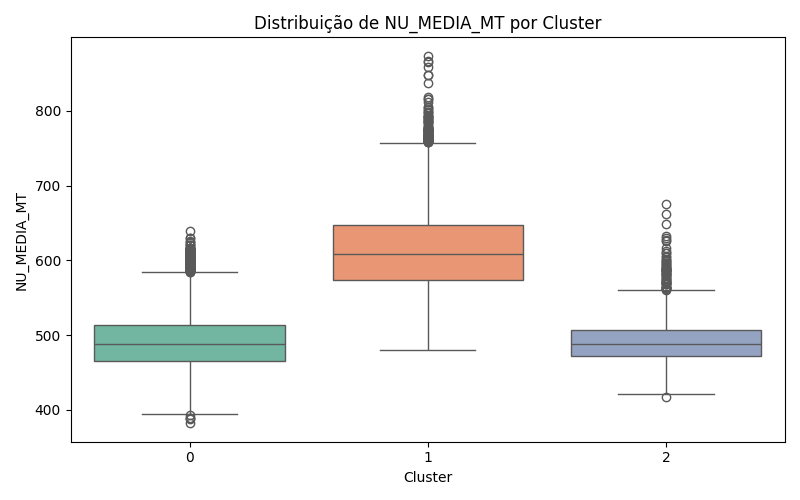
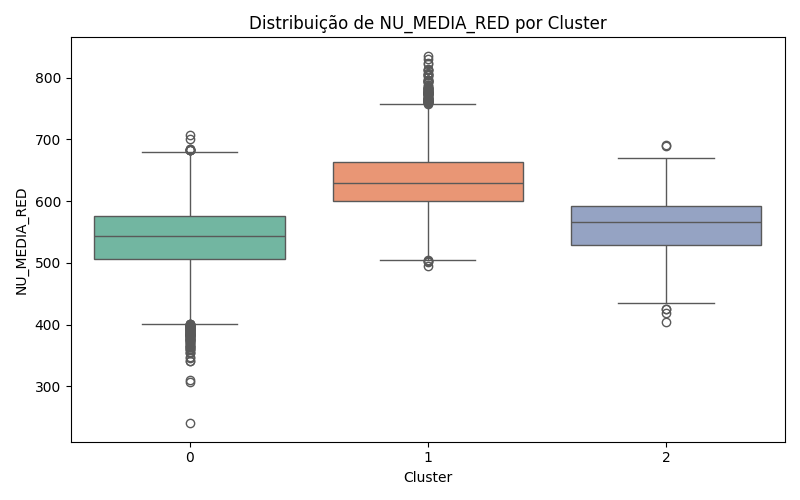
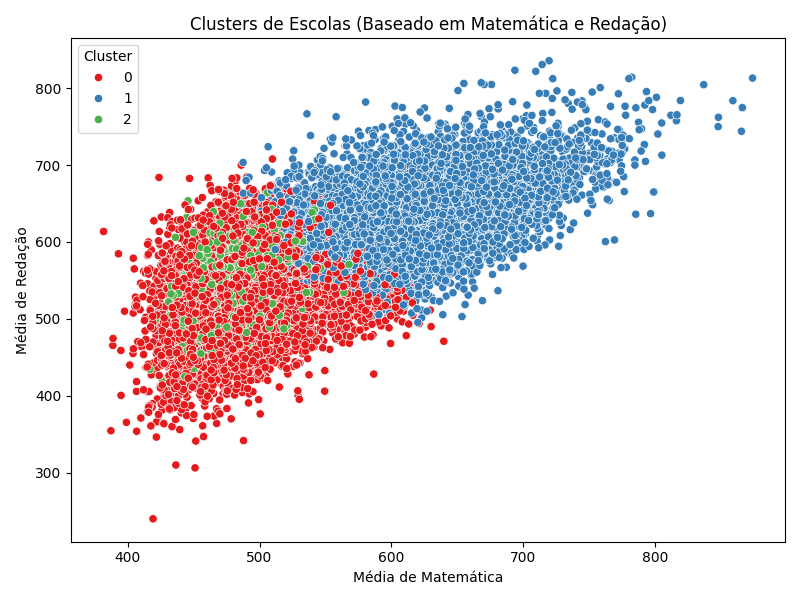

Neste projeto, utilizei a técnica de clusterização com KMeans para agrupar escolas do estado de São Paulo a partir de indicadores de desempenho no Enem 2015. Considerei variáveis como número de matrículas e médias por área (Ciências Humanas, Linguagens, Matemática, Redação e Ciências da Natureza).
Em outras palavras: minha ideia foi identificar grupos de escolas que tenham perfis parecidos — como número de alunos e desempenho — para entender melhor padrões no sistema educacional.
Selecionei apenas as escolas paulistas e normalizei os dados com o StandardScaler, para garantir que todas as variáveis tivessem o mesmo peso na clusterização.
Aqui estão os boxplots que mostram como cada variável se comporta em cada grupo identificado:
     Em outras palavras: os gráficos mostram como os grupos se comportam. Por exemplo, algumas escolas têm muitos alunos e notas mais baixas; outras têm poucos alunos e notas mais altas.
Para facilitar a visualização, usei duas variáveis principais — média em Matemática e Redação — e representei cada escola como um ponto colorido:
Em outras palavras: cada cor representa um grupo diferente de escola. Com isso, consigo ver quais se destacam mais ou menos em determinadas áreas.
A clusterização me permitiu identificar padrões distintos entre as escolas paulistas com base nos dados do Enem. Esses grupos ajudam a entender melhor o sistema de ensino e podem ser úteis na formulação de políticas públicas direcionadas.
Em outras palavras: consegui separar as escolas em grupos com perfis parecidos. Isso pode ajudar na tomada de decisão sobre onde investir e como melhorar a qualidade do ensino.
← Voltar ao início